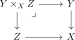
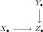
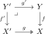
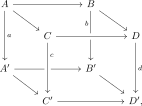
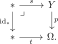
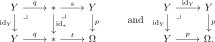

2.3. Characterizations and consequences
The descent definition is intrinsic, but it is not always the most convenient way to recognize a topos or to prove exactness results inside one. We first compare it with the Giraud axioms, object classifiers, and presentations by presheaves. We then extract several exactness properties that are useful in practice and study the classification of local classes of morphisms.
2.3.1. Characterizations of topoi
We now provide various alternative characterizations of topoi. Throughout this section, we fix a presentable category \(T\).
An object classifier is an object \(U \in \widehat{T} := \Fun^{\mathrm{lim}}(T\catop,\widehat{\An})\) such that \(\Hom(X,U) \simeq (T_{/X})^{\simeq}\). Note that \(T\) admits an object classifier if and only if the assignment \(X \mapsto (T_{/X})^{\simeq}\) preserves limits.
Let \(T\) be a presentable category. Then the following are equivalent:
The category \(T\) is a topos.
Colimits are universal and there exists an object classifier.
The Giraud axioms are satisfied:
Colimits are universal (Definition 2.7);
Coproducts are disjoint (Example 2.12);
Groupoids are effective (Definition 2.21, Lemma 2.32);
There exists a small category \(C\) and a left exact localization \(\PSh(C) \to T\).
Proof
- Universality of colimits holds by definition of a topos.
- Coproducts are disjoint by Example 2.12.
- All groupoids are effective by Corollary 2.23.
Let \(C\) be a category which has finite limits, and let \(T\) be a presentable category satisfying the Giraud axioms. Let \(f\colon C \to T\) be a left exact functor. Then the unique colimit-preserving extension \(F\colon \PSh(C) \to T\) of \(f\) is left exact.
Proof

Marc mentioned he did not yet manage to find a direct proof that (3) implies (1) that does not go through the presentation of a topos as a left exact localization of a presheaf topos.
2.3.2. Exactness in topoi
Presenting a topos as a left exact localization of a presheaf topos allows many exactness questions to be reduced to the corresponding statements in \(\An\). We record four useful instances. The last one is more specialized, but it is a convenient criterion in calculations with simplicial objects.
Proposition 2.45. ({cf. [Lurie 2009, Proposition 6.4.5.9]})
The following statements hold true in a topos:
Filtered colimits commute with finite limits.
Sifted colimits commute with finite products.
For every anima \(A\), the colimit functor \(\colim_A\colon \Fun(A,T) \to T\) preserves limits indexed by weakly contractible categories. For example, every \(G\)-equivariant pullback diagram induces an isomorphism
\[(X \times_Z Y)/G \iso X/G \times_{Z/G} Y/G .\]Given a diagram of simplicial objects

such that \(\tau_0 Z_{\bullet}\) is constant, we get an isomorphism
\[\colim_n (X_n \times_{Z_n} Y_n) \iso (\colim_n X_n) \times_{\colim_n Z_n} (\colim_n Y_n) .\]
Proof
2.3.3. The subobject classifier
The object classifier of a topos is generally a large object. Nevertheless, many suitably small families of morphisms are represented by objects of the topos itself. The relevant hypothesis is locality: membership in the family must be stable under base change and detectable after passing to a cover. We develop this general classification result before specializing it to monomorphisms and the subobject classifier.
Let \(\Sigma\) be a class of morphisms in a topos \(T\). We say that \(\Sigma\) is a local class if the following conditions are satisfied:
It is closed under base change;
It is closed under small coproducts;
Given a pullback square in \(T\) of the form

in which \(f' \in \Sigma\) and \(g\) is an effective epimorphism, we also have \(f \in \Sigma\).
Let \(\Sigma\) be a class of morphisms in a topos \(T\) which is stable under base change. The following conditions are equivalent:
The class \(\Sigma\) is a local class;
The functor \(T\catop \to \widehat{\Cat}\) given by sending \(X \in T\) to the full subcategory of \(T_{/X}\) spanned by the morphisms in \(\Sigma\) preserves limits;
The functor \(T\catop \to \widehat{\An}\) given by sending \(X \in T\) to the full subanima of \((T_{/X})^{\simeq}\) spanned by the morphisms in \(\Sigma\) preserves limits;
The full subcategory of \(\Ar^{\pb}(T)\) spanned by the morphisms in \(\Sigma\) is closed under colimits;
The class \(\Sigma\) is closed under coproducts, and for every commutative cube in \(T\) of the form

if the top and bottom squares are pushout squares, the left and back squares are pullback squares, and \(a,b,c \in \Sigma\), then also \(d \in \Sigma\).
Proof
Let \(\Sigma\) be a local class in \(T\). We say that a morphism \(f_{\Sigma}\colon Y_{\Sigma} \to X_{\Sigma}\) classifies \(\Sigma\) if for every object \(X \in T\) the map
is a monomorphism of animae whose image is given by the full subanima spanned by the morphisms in \(\Sigma\). In this situation, we also say that the object \(X_{\Sigma}\) classifies \(\Sigma\).
By the Yoneda lemma, a classifying object is unique if it exists.
Let \(\Sigma\) be a local class in \(T\). Then there exists a classifying object for \(\Sigma\) if and only if for every object \(X \in T\) the full subanima of \((T_{/X})^{\simeq}\) spanned by the morphisms in \(\Sigma\) is small.
Proof
The class of monomorphisms in a topos is local. Stability under base change is immediate, coproducts of monomorphisms are monomorphisms by disjointness and universality of coproducts, and locality follows by testing the diagonal after pullback along an effective epimorphism. Moreover, presentable categories are well-powered, so for every \(X \in T\) the subanima of \((T_{/X})^{\simeq}\) spanned by the monomorphisms is small. The preceding corollary therefore applies.
For a topos \(T\), we denote by \(\Omega\) the classifying object for the class of monomorphisms, and call it the subobject classifier.
The subobject classifier is \(0\)-truncated. That is, for every object \(X \in T\), the anima \(\Hom_T(X,\Omega)\) is 0-truncated.
Proof
Let \(Y \to \Omega\) be the universal monomorphism. Then \(Y\) is the terminal object.
Proof


References
- Jacob Lurie. Higher topos theory. Ann. Math. Stud. 170, Princeton, NJ: Princeton University Press. 2009.
- Christian Sattler, David Wärn. Note on confluent colimits. 2025.